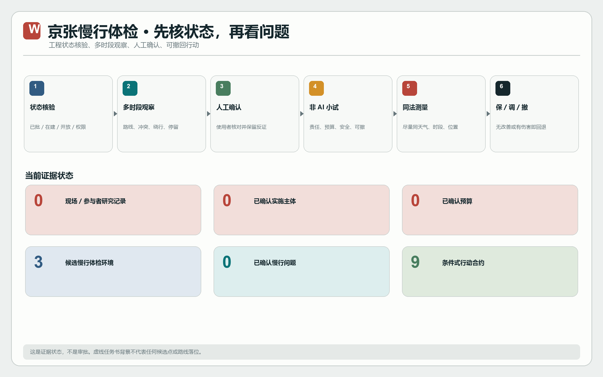
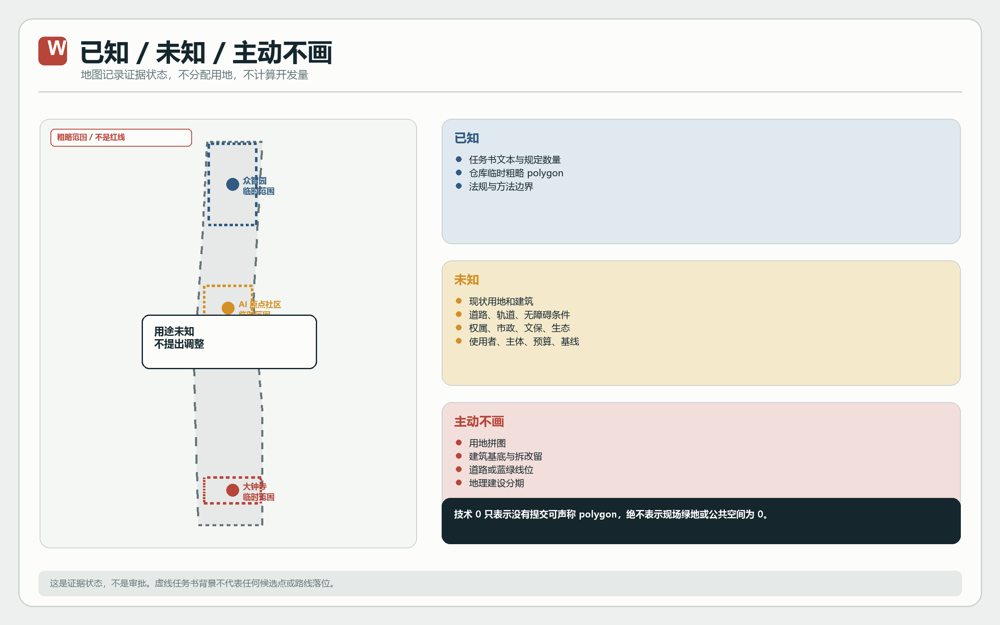
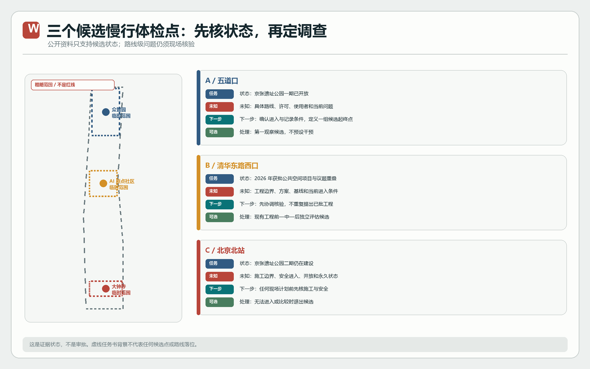
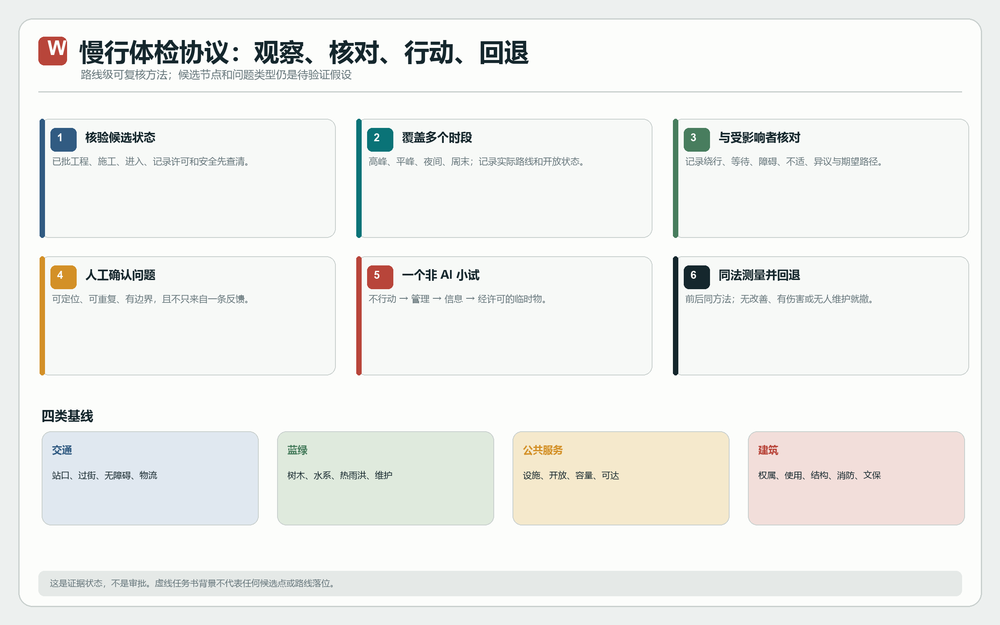
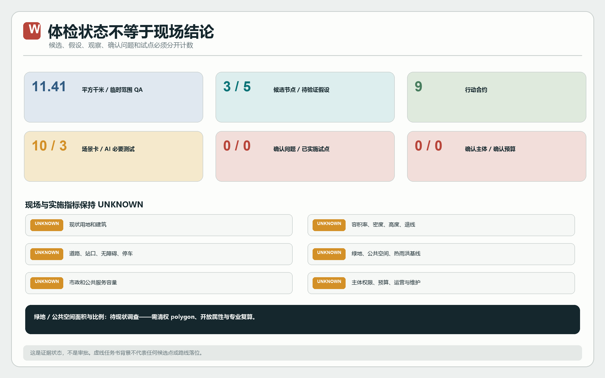

京张慢行体检
本静态页区分候选状态、待验证假设、观察记录、确认问题与可撤行动，不把候选点写成已确诊问题或批准项目。
总览地图三层范围重点区域用地分区交通慢行蓝绿公共空间建筑更新项目AI 场景核心指标任务覆盖自检状态来源假设
核心指标与自检状态
绿地/公共空间面积与真实比例均待调查。隐藏的数值声明仅因当前视觉校验器硬性要求而保留，不得进入规划或跨方案统计。
状态核验—观察—行动—回退

已知、未知与主动不画

三个候选慢行体检环境

慢行体检协议

体检指标与缺口

来源、假设与任务覆盖
官方公告和任务书定义任务；仓库 polygon 是临时几何；现场条件、主体、预算和基线在核验前保持未知。